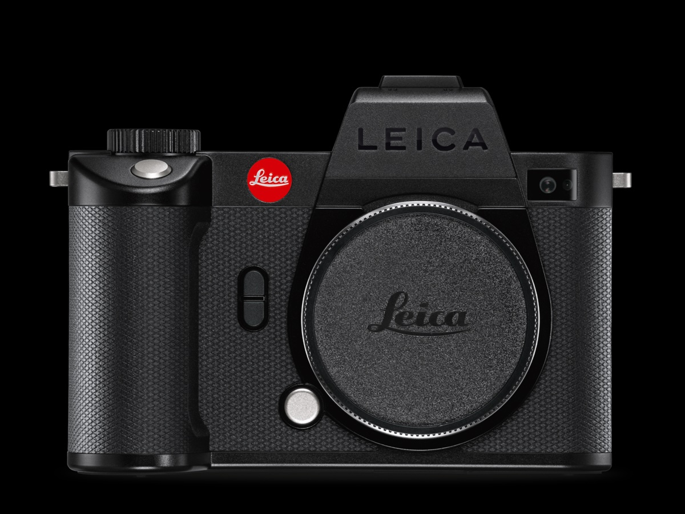

テクノロジー、旅、写真、そして故郷の城。長く香港で暮らした視点から、変わっていく街と、変わらずそこにある風景を記録しています。
私の原点は、1993年に渡った香港、そして深水埗（シャムスイポー）の電脳街にあります。スマートフォン、ガジェット、カメラアクセサリー。新しい道具が生まれる場所の熱気の中で、記録することへの興味が少しずつ育っていきました。
iPhoneで写真を撮り始め、やがて手にする機材はライカへ。道具への好奇心はそのまま、街の光、旅先の空気、そして故郷・姫路城を見るための視点になりました。
長く海外に住み、たまに帰国して姫路城を歩くと、外国人観光客の眼差しを通して初めて「近すぎて見えていなかった」風景の大きさに気づきます。白鷺三十六景は、その気づきを写真と言葉で残していく試みです。
故郷の城を、外から戻ってきた視点で撮り直す写真プロジェクト。
消えていく街の光を、記憶ではなく記録として残すアーカイブ。

Leica、ドローン、Mac。実際に持ち出して使う道具の記録。